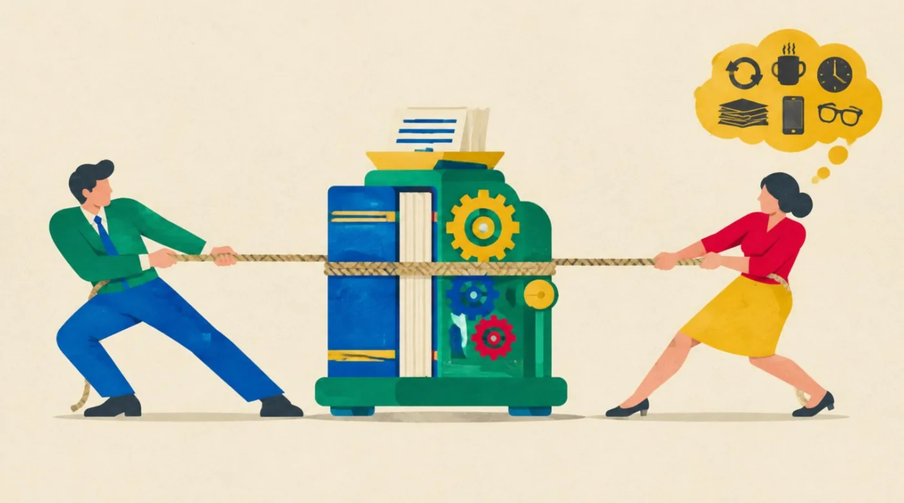
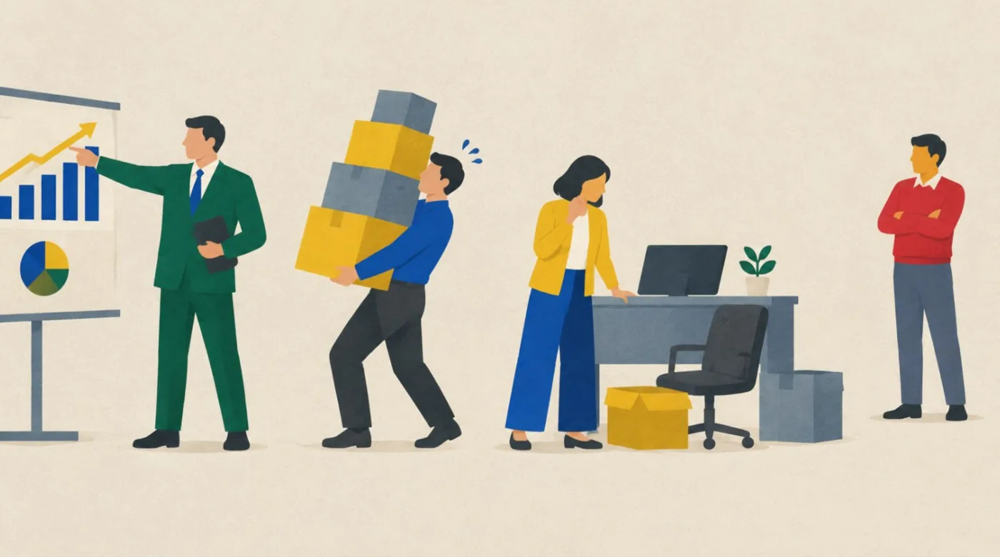
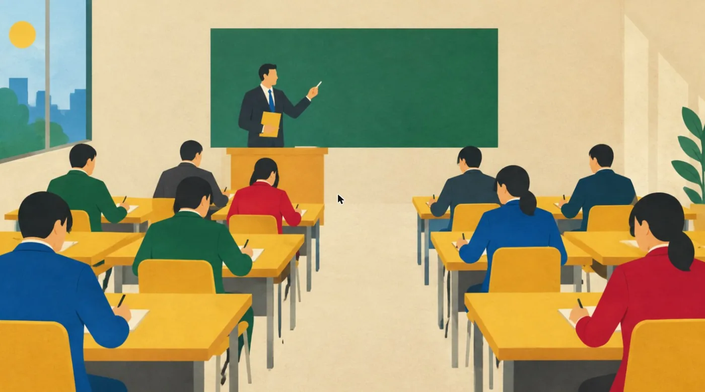
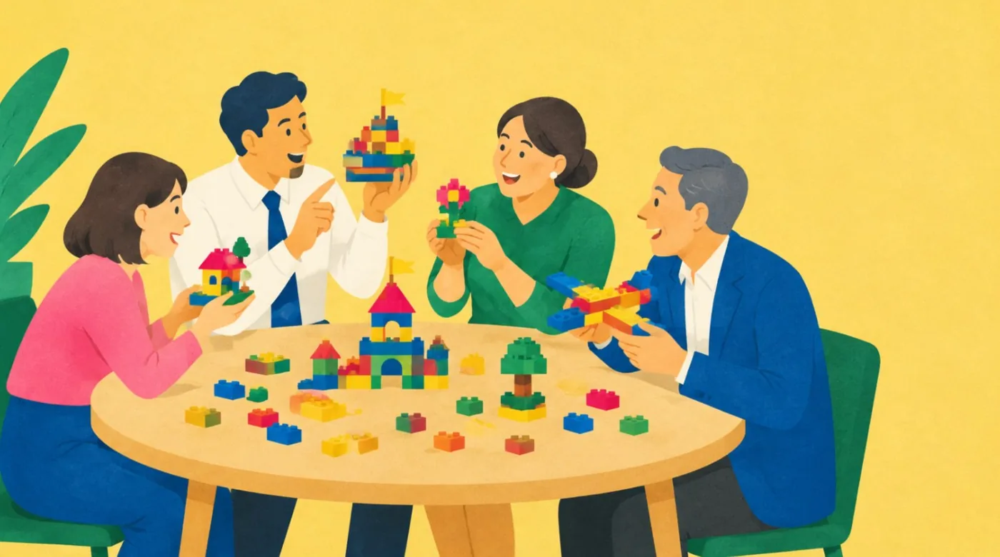
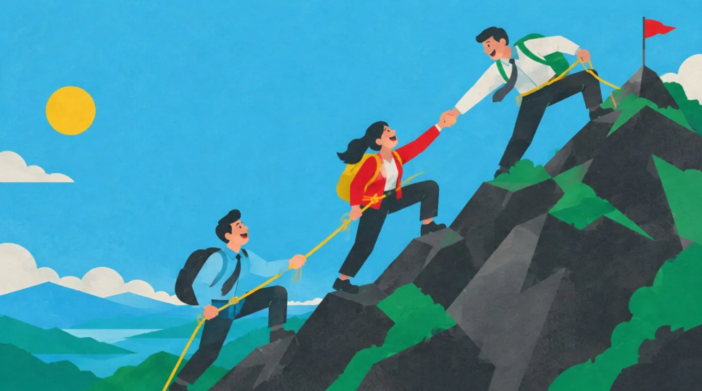
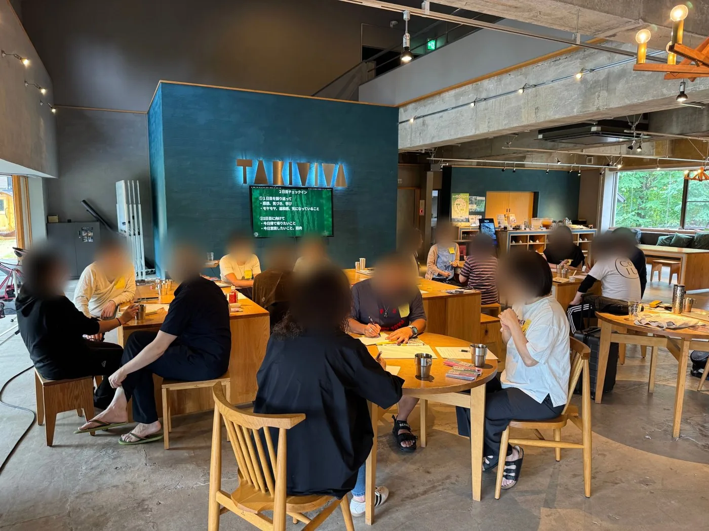
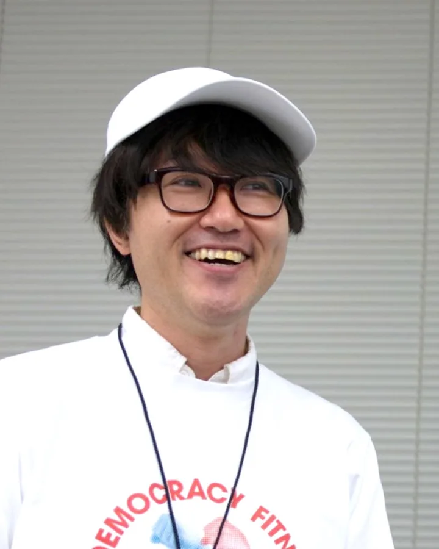

2026.10 ／ きづきくみたて工房
今、この社会に必要な学習とは？きづきくみたて工房が提供する学習体験
本ページは、国内外のさまざまな先進的な教育実践から学ばせてもらった森本康仁が、これから必要な学習とは何かについて考えをまとめたものです。私が特に力を入れているところを中心にまとめているため、書かれていない大切なものが他にもたくさんあることでしょう。
共感してくださった方、「これも入れたほうがいい」と思われた方、「この部分は自分たちだけではできないので、一緒にやりたい」と感じた方は、ぜひご連絡ください。
なぜ、組織は変化に追いつけないのか
研修はやっている。方針も出している。それでも、現場が変わった実感がない。多くの経営者・人事の方が、同じことを口にします。何が起きているのかを、順番に見ていきます。
何が起きているのか
世の中は、速くなった。
技術、顧客の期待、働き方。変化は一つひとつ積み重なり、積み重なるほどスピードを上げます。
社会の変化と、組織の変化
社会は加速度的に。組織は直線的に。
組織は既存の業務を回すことに手一杯で、中身は少しずつしか変わりません。
この開き続ける差が、「未来からの不足」。
放置すれば、差は広がり続けます。研修をしても埋まらないのは、研修の中身の問題ではなく、この差の広がる速度に、組織の変わる速度が追いついていないからです。
「未来からの不足」の中身
足りないのは、お金や人手の前に、この三つです。上から順に欠けていきます。
「3年後、どんな未来に辿り着きたいか」の像が、一人ひとりの中にない。あっても、共有されていない。上から配られた言葉はあるが、自分の言葉になっていない。
その未来から今を振り返ったとき、何を変え、何を手放し、誰と合意するのか。道筋が描かれていない。描かれていても、立場の違う人たちと擦り合わせられていない。
道筋があっても、日々の仕事の中で小さく試し、振り返り、続ける時間と習慣がない。目の前の業務に押し流され、未来のための活動が毎日ゼロになる。
ビジョン、戦略、実践。三つとも、対話からしか生まれない。
ビジョンは誰かが配るものではなく、一人ひとりの中から引き出されるもの。戦略は立場の違う人と擦り合わせるもの。実践は仲間と続けるもの。このページは、この三つの不足を、どう埋めていくかの話です。
この三つは、学校で習わなかった。
ただし、学校が悪いのではありません。義務教育は、確かに多くのものを育ててきました。読み書き計算と知識の土台。決まった時間に集まり、集団で動く力。学級会や係活動での話し合いの経験。そして「正解に辿り着く力」。これは、変化が遅く正解が長持ちする時代には、最も有効な能力でした。
問題は、学校が最適化されてきた時代と、今の時代がずれたことです。社会は加速し、学校は直線的にしか変われない。1章と同じ構図が、ここにもあります。
筆者（森本）は公立小学校で9年間教えました。この項は、その実感から書いています。
学校で習ったこと ／ 習わなかったこと
学級会はあった。けれど、本当に利害がぶつかる決定は、扱わなかった。
だから多くの人が、大人になって初めて、痛みを伴う合意形成に素手で向き合うことになります。現行の学習指導要領は「主体的・対話的で深い学び」を掲げ、学校は変わり始めています。ただ、今の経営層・管理職の多くは、その前の教育を受けた世代です。
その結果が、数字に出ています
45.1%
「自分自身に満足している」日本の若者の割合。
他の6か国（米・英・独・仏・韓・スウェーデン）は70〜87%。自己効力感の土台の差です。
32.5%
「自分の参加で、社会を少し変えられるかもしれない」と思う割合。
7か国中、最低。個人の意思が社会の意思になると信じられていない、という数字です。
出所：内閣府「我が国と諸外国の若者の意識に関する調査」（平成30年度）、13〜29歳対象。
そして会社も、教えてくれなかった。
会社もまた、多くのものを教えてくれました。業務の手順と、商品・顧客の知識。報告・連絡・相談と、納期を守ること。役職に応じた責任の取り方。そして「与えられた仕事を、正確に回す力」。学校の「正解に辿り着く力」の、職場版です。
ただし、その教え方の大半はOJT、つまり「先輩を見て覚えろ」でした。これは、先輩が今と同じ仕事をしていた時代の仕組みです。
会社で教わったこと ／ 教わらなかったこと
先輩も、答えを持っていない時代になった。
見て覚えるOJTは、見る相手が同じ仕事をしていた時代の仕組みです。社会が加速すると、先輩の答えも古くなります。学校でも、会社でも、教わらなかった。だから今、大人の学び方そのものを見直す必要があります。
会社自身も、それを認めています
約8割
人材育成に「問題がある」と答えた事業所の割合。
問題の内訳で最も多いのが「指導する人材が不足している」（約6割）。教える側に、教えられる人がいない、と会社自身が言っています。
出所：厚生労働省「能力開発基本調査」（令和7年度：問題がある80.1%、うち指導人材不足59.5%）。あわせて、パーソル総合研究所「グローバル就業実態・成長意識調査」（2022）では「管理職になりたい」日本の就業者は19.8%で、18の国・地域で最低でした。教わらないまま管理職にされる仕事が、割に合わないものに見えている数字です。
放っておくと、何を失うのか
対話は、贅沢ではない。
「対話に時間を使う余裕はない」とよく言われます。けれど、対話がないまま回っている組織は、別の形で、すでに払っています。見えにくいだけです。
新卒1人の採用に、平均で約94万円。大卒の3人に1人は3年以内に離職します。採用費、教える時間、引き継ぎの穴が、そのたびに発生します。
従業員1万人規模の企業で、ムダと感じられている社内会議は年間約67万時間（332人分の年間労働時間）、人件費で約15億円相当という試算があります。
現場が気づいている問題が、上がってこない。気づいてから手を打つまでの遅れは、どの帳簿にも載りません。
省いた分は、別の請求書で届く。
出所：リクルート就職みらい研究所「就職白書2020」（新卒採用1人あたりの平均採用費）、厚生労働省「新規学卒就職者の離職状況」（大卒3年以内離職率は近年3割台で推移）、パーソル総合研究所・中原淳「長時間労働に関する実態調査」（2017〜18年）の「ムダな社内会議」の試算。
なぜ、追いつけないのか
変わらないのは、変えたくないからではない。
多くの組織が、すでに手は打っています。それでも戻ってしまう。まず、その「戻り方」を見てみます。
変えようとして、戻った経験はありませんか
評価制度、1on1、提案制度。半年後、形だけが残り、運用は以前と同じに戻った。
受講直後は前向きだった。現場に戻ると、忙しさと古い評価軸が、学んだことを押し流した。
方針は正しかった。ただ、現場の「うちではこうだ」が変わらず、部署をまたいだ途端に止まった。
研修が悪いのではない。受け止める側の職場が、変わっていない。
人の行動は、個人と環境の掛け算で決まる。
パフォーマンス研究のT. ギルバートは、人が期待どおりに動かないとき、原因の大半は個人の能力や意欲ではなく、その人を取り巻く環境側にあると整理しました。情報、道具、評価、手順。環境が古いまま個人だけを変えても、行動は戻ります。逆も同じです。
組織に当てはめると、環境側が「仕組み」、個人側が「認知」です。
参考：T. F. Gilbert, Human Competence（1978）の行動工学モデル（BEM）
組織を動かしている、二つのもの
制度、権限、評価、会議体、手順。目に見えて、変えようとすれば変えられるもの。
前提、常識、思い込み、「うちではこうだ」。目に見えず、本人も気づいていないもの。

片方だけ変えても、もう片方が、引き戻す。
新しい制度を入れても、古い前提のまま運用される。研修で前提が変わっても、古い評価制度が元に戻す。どちらも、よくある光景です。
だから、更新するのは「仕組み」と「認知」、両方。
ただし、二つの更新は性質が違います。それぞれに「肝」があります。
新しいことを学ぶ前に、これまで正しかった前提を手放すこと。「学び直し」ではなく「学びほぐし」。手放さないまま上に積んでも、古い前提が判断を決め続けます。
過去の決定、もう目的を失ったルール、誰も見直さない手順。放置された仕組みは利息を生み、変えるコストを年々増やします。借金と同じで、返すなら早いほど安い。
どちらにも共通する、土台
自己効力感
自分は、やればできる。
組織効力感
うちのチームなら、できる。
手放すにも、返済するにも、この感覚が要る。
これが低いと、正しい方針があっても、人は前提を手放しませんし、負債に手をつけません。効力感は、小さな成功の積み重ねでしか育ちません。以降の章は、この二つをどう育てるかの話でもあります。
変わるには、痛みが伴う
何かを手放さずに、更新は起きない。
慣れた手順。既得の役割。これまで正しかったやり方。アンラーニングも、負債の返済も、誰かが何かを手放すということです。だから、痛みを伴う意思決定になります。
では、誰が手放すのか
たとえば、評価制度を一つ変えるとします。一見、人事の仕事です。しかし実際に手放すものが生じるのは、人事だけではありません。
今期の数字との整合を、説明する責任を負う。
慣れた評価の仕方を捨て、部下に新しい基準を説明する負荷を引き受ける。
これまで評価されてきた強みが、評価されなくなるかもしれない。
直接は関わらないが、「次はうちか」と見ている。
一つの変更が、立場の違う何人もの「手放すもの」に届く。
仕組みは一人の中に収まっていません。複数の人にまたがっています。だから、仕組みを変える決定は、一人では下せないのです。
手放す人たちを、整理すると4種類になる。
プロジェクトの成否に影響する人、あるいはプロジェクトから影響を受ける人。これをステークホルダーと呼びます。意思決定者だけではありません。
ステークホルダーの4つの立場

決める人の合意だけ取れても、進まない。
見落とされがちなのは「動く人」と「影響を受ける人」。立場の違う人たちとの、高度な合意形成が必要になります。
では、この合意形成はいつ必要になるのか
抽象的な「変化」ではなく、予定表に載っているあの件。
立場の違う人たちの「手放すもの」が同時に動く場面は、特別なものではありません。多くの会社で、すでに来期の計画に載っています。
先代の「正しかったやり方」を、誰がどこまで手放すか。
道具が変わると、慣れた手順と役割分担が変わる。
二つの「うちではこうだ」が、一つの職場に同居する。
既存事業の人員・予算・評価軸を、どこまで譲るか。
影響を受ける人がいちばん多く、見ている人もいちばん多い。
上で見たとおり、人事だけの仕事ではない。
対話力は、この一つひとつの成否に直結する。
いずれも「決める人」の合意だけでは進まず、「動く人」「影響を受ける人」との対話が要る案件です。研修のテーマとしてではなく、来期の案件の準備として考えると、必要な順番が見えてきます。
説明では、埋まらない
「ちゃんと説明したのに、伝わっていなかった」
同じ言葉を聞いても、立場が違えば受け取り方は違います。経営層は「いつ回収できるのか」と聞き、現場は「負荷はどれだけ増えるのか」と聞いています。ただ、ズレには二種類あります。
情報が足りないだけ。用語や前提が違うだけ。相手の関心に合わせて言い換えれば通じる。
→ 伝え方の問題
一方が得をすると、他方が損をする。優先順位や価値観そのものが違う。誰かが何かを手放さないと進まない。
→ 伝え方の問題ではない
組織の変化で止まるのは、ほぼ、右側。
言い方の工夫で突破しようとすると、消耗します。これは、立場の違う人が互いの前提を見せ合い、壊し、作り直すことでしか動きません。
つまり、対話からしか生まれない。
指示でも、説得でもなく。遠回りに見えますが、他の道は結局ここに戻ってきます。
仕事の置き場所を、入れ替える
では、「未来からの不足」を埋める仕事は、誰がしているのか。
組織の中の仕事を、二つの軸で分けてみます。「指示された仕事か、自分で作る仕事か」。「定型業務か、非定型業務か」。
仕事の4つの置き場所
業務
突発的な依頼、トラブル対応、調整。
誰にも頼まれていない、まだ形のない仕事。組織に価値を創造する領域。
業務
言われたことを、決まった手順で、正確にこなす。評価されやすく、意識が集中する。
仕組み化、改善、手順の標準化。
意識は左下に集まり、未来は右上にしかない。
「指示された定型業務」は、やるべきことが明確で評価もされやすい。だから意識が集まります。しかし、ここだけでは価値は「維持」にとどまります。1章のギャップを埋める活動は、右上の「自分で作る非定型業務」からしか生まれません。
左下から右上へ。この入れ替えが起きないと、組織は変化に適応できない。
入れ替えには手順があります。左下の「指示された定型業務」を仕組み化して右下に移し、空いた時間を右上に回す。定型業務の仕組み化は、未来への投資です。
ただ、右上の仕事には決定的な特徴があります。誰にも頼まれていない。期限もない。評価もすぐには出ない。つまり、本人の中に「これをやりたい」という意志がなければ、始まりようがないのです。
全員は、動かない
右上の仕事は、Willからしか始まらない。
そして対話にも、ものすごく大きなエネルギーが要ります。強い意志（Will）のないところから、プロジェクトは生まれません。生まれても、続きません。これは、誰かの怠慢ではなく、人のエネルギーの性質です。
Willに、学問の側から名前をつけるなら
エージェンシー
OECDは、これからの学習者に必要な中核の力を「エージェンシー」と呼びました。定義は「変化を起こすために、自分で目標を設定し、振り返り、責任をもって行動する力」。誰かに言われて動くのではなく、自分の意思で世界に働きかける力です。本ページで言う「Will」は、このエージェンシーの、個人の内側にある種の部分にあたります。
目標を自分で立て、行動し、結果を引き受け、振り返る。右上の「自分で作る仕事」は、エージェンシーが仕事の形をとったものです。
OECDは、個人のエージェンシーは仲間・教師・組織との相互作用の中で育つとして、これを「共同エージェンシー」と呼びました。9章のデモクラシーは、この共同エージェンシーの話です。
Willは、個人のエージェンシー。デモクラシーは、共同エージェンシー。
参考：OECD Learning Compass 2030「Student Agency」「Co-agency」。日本の学習指導要領の「主体的・対話的で深い学び」も、同じ流れの中にあります。学校が育てようとし始めたこの力を、大人の職場でどう育てるかが、本ページの問いです。
100人の組織で
逆に言えば、Willのある数人から始めれば、始まる。
「どこから」の答えは、いつも、いちばん困っていて、いちばん動きたい数人のところにあります。最初から全社を動かす必要はありません。点の数は例えです。
8%
日本で「仕事に熱意を持って取り組んでいる」従業員の割合。
調査対象国の中で、最低水準が続いています。
出所：Gallup, State of the Global Workplace 2026（2025年データ）。数人のWillが貴重である理由でもあり、その数人を消してはいけない理由でもあります。
対話は贅沢ではなく、コスト削減です。
決まらない会議。元に戻る研修。途中で止まる方針。そのすべてに、組織はすでにお金を払っています。
学び方を、変える
Willは、教えて育つものではない。
では、右上の仕事を作れる人、自分の前提を手放せる人は、どうすれば育つのか。ここで、学び方そのものを見直す必要が出てきます。学習には、大きく二つのスタイルがあります。
約半数
日本の就業者の半分は、会社の外で何も学んでいない。
勤務先以外での学習・自己啓発を「特に何もしていない」人の割合。18の国・地域で最も高い（52.6%）。
出所：パーソル総合研究所「グローバル就業実態・成長意識調査」（2022、18の国・地域）
0.1%
会社も、人にほとんど投資していない。
日本企業の人材投資（OJT以外）のGDP比。米国の約2%に対し、約20分の1。
出所：経済産業省「未来人材ビジョン」（2022）、2010〜2014年平均。原データは学習院大学・宮川努教授の推計（厚生労働省「平成30年版 労働経済の分析」）
学ばない人が多いのではなく、「教わる学び」しか用意されてこなかった、と見るほうが実態に近いと私は考えています。
二つの学び方

教わる

作って、見せ合う
正解を知っている人が、知らない人に教える。
- 正解が、先にある
- 理解できたかを、テストで確かめる
- 教える側が、内容と順番を決める
- 変化が遅く、正解が長持ちする時代に向く
自分で何かを作り、人に見せ、壊して作り直す中で学ぶ。
- 正解は、作りながら見つける
- 作ったものを見せ合い、問い合う
- 学ぶ側が、問いと形を決める
- 正解がすぐ古くなる時代に向く
認知は、教わっても更新されない。作り直したときに、更新される。
教わった知識は、古い前提の上に積まれるだけです。自分の手で形にして初めて、本人も気づいていなかった前提が表に出て、本人の手で書き換わります。アンラーニングは、作ることで起きます。そして「作って見せたら通じた」という小さな成功が、自己効力感を育てます。参考：S. パパート（MITメディアラボ）の構築主義
「作る学び」は、右上の仕事の予行演習でもある。
誰にも頼まれていないものを、自分で問いを立てて形にし、人に見せる。これは「自分で作る非定型業務」そのものの動きです。学び方を変えることは、仕事の置き場所を入れ替えるための、いちばん安全な練習です。
遊びが、本気を引き出す
難しい問題を、真面目に解くだけでは、続かない。
ここまでの話は、正直、重いです。アンラーニング、負債、痛み、対立。これを眉間にしわを寄せて取り組むと、Willのある数人が最初に燃え尽きます。
ハードファン

難しいから、面白い。
パパートは、子どもたちがプログラミングに没頭する様子を「ハードファン（hard fun）」と呼びました。簡単だから楽しいのではありません。難しいのに楽しい。むしろ、難しいからこそ楽しい。人が最も粘り強く、最も創造的になるのは、この状態のときです。
参考：S. Papert, "Hard Fun"（1998）。M. Resnick（MITメディアラボ）のLifelong Kindergartenも、遊びを通じた創造的学習を同じ系譜で扱っています。
遊び心が、構造のどこで効くか
「遊びでやってみた」なら、壊しても痛くない。小さな試行が増え、効力感が育つ。
ブロックやカードを握ると、役職が消えて手が動く。全員が同じ形で場に出せる。
筋肉は反復でしか育たない。面白くなければ、二回目はない。
遊び心は余興ではなく、変化のエンジン。
LEGO® SERIOUS PLAY® の名前にある「真剣に遊ぶ」は、まさにこれです。創造性は、安心と遊びの中でしか出てきません。プレイフルラーニングは、重い話を軽くするためではなく、重い話を最後まで運ぶためにあります。
森の中で、2日間
構造化した議論と、構造化しない時間を、地続きにする。

群馬・北軽井沢のTAKIVIVAで、合宿版デモクラシーフィットネスを開いています。室内のセッションで10の筋肉すべてを2日間で動かし、夜は屋外の焚き火を囲む。肩書きを脱いだ時間にしか出てこない意思があり、翌朝の議論の質が変わります。
経営チームには、同じ場所で経営合宿も設計しています。全社に求める前に、トップ層が最初に練習する場として。
写真：きづきくみたて工房がTAKIVIVAで開催した合宿版デモクラシーフィットネス（2026年8月）2日目の記録。経営合宿は、中期方針の策定・組織課題の棚卸し・新旧経営陣の引き継ぎなど、「何を決める合宿か」が決まっていない段階からの相談も受けています。
デモクラシーが、効く
個人のWillは、一人のままでは消える。
作る学びと遊び心で、Willのある人が育ったとします。しかしその人が右上の仕事を始めた瞬間、3章と4章の壁にぶつかります。立場の違う人たちとの合意、譲らないと動かない対立。ここで要るのが、デモクラシーです。
「民主主義」と「デモクラシー」は、同じではない
選挙、多数決、議会、権利。国や政治の仕組みとしての言葉。「職場で民主主義」と聞くと、多くの人は多数決か、政治の話を思い浮かべます。
一人ひとりが自分の意思を起点に、違う意見の人と関わりながら、主体的に活動の範囲を広げていくこと。聴く、問う、反対を述べる、譲る。制度ではなく、毎日の仕事の中で実際にやることです。
デモクラシーとは、個人の意思を中心に、主体的に活動を広げていくこと。
北欧では、これを「鍛えられる筋肉」として扱います。デモクラシーフィットネス（デンマーク発）は、その筋肉を短い反復で実際に動かすトレーニングです。
デモクラシーは、この構造のどこで効くか
Willを、消さない。
反対意見を述べる筋肉がなければ、一人のWillは「今は無理」で止まります。言い出せる筋肉が、右上の仕事を生かします。
Willを、広げる。
積極的に聴く、好奇心を持つ筋肉が、他の人のWillと接続します。一人の意思が、数人の合意になります。
痛みを、分け合って決める。
譲らないと動かない対立を、妥協する筋肉で前に進めます。誰かが何かを手放す決定を、地位ではなく対話で下します。
これができないと、個人の意思は組織の意思にならない。
意思を運ぶ筋肉が、要る。
Willのある数人が育っても、デモクラシーの筋肉がなければ、その意思は組織に広がりません。入れ替えは個人の中で終わり、組織は左下に戻ります。
日本の組織で、実際に測ってみると
10筋中9筋
個人は「自分はできている」。組織は「うちではできていない」。
10のデモクラ筋のうち9つで、個人の自己評価が組織への評価を上回りました。回答者74人中62人が、自分より組織を低く評価しています。足りないのは個人の能力より、組織の環境という読みです。
唯一の例外が、「勇気」の筋肉。
勇気だけは、個人の自己評価（3.31）が組織への評価（3.38）を下回ります。「不快に感じても、その場で正直に伝えている」は、個人側60問中で最も低い項目でした。環境が整っていても、人は自動的には発言しない、ということです。
2.43 / 5
「声が大きい人や、立場が上の人の意見に落ち着く」
全60問中、最も低い評価（逆転項目を変換済み）。次いで「会議では発言する人が固定されている」2.65、「誰かがやるだろうという傍観者意識」2.82。組織の最弱点は、個人の筋肉ではなく「決め方」です。
「変えるべきだと皆が言うのに、誰も一歩を踏まない」症状は、この二つから来ています。Willが言葉にされず、言葉にされても地位に消される。
出所：デモクラ筋診断（法人版・意識版、全60問・5件法）2026年3月21日〜9月19日の回答。直線回答・完全重複・学生版（40問）を除外した n=74。2026年10月24日集計。回答者は体験会参加者など対話への関心が高い層に偏っており、日本の組織全体を代表するものではありません。
ただし、勇気を直接鍛えようとしない。
「勇気の筋肉が弱い」と分かると、人は勇気を出す練習をしたくなります。「もっと発言しましょう」「反対意見を言いましょう」。しかし、地位の高い声が結論を決める場で、個人に勇気だけを求めても、結局「できない」で終わります。本人が消耗して、終わります。
勇気の側ではなく、勇気がなくても意思が場に出る側を設計します。
勇気がなくても、意思が場に出る三つの設計
LEGO® SERIOUS PLAY® では、自分の考えをブロックの作品にして語ります。TOPAASIA では、引いたカードの言葉を手がかりに話します。「私はこう思う」と言わなくても、作品やカードが代わりに語ってくれる。地位に関係なく、全員が同じ形で意思を場に出せます。
デモクラシーフィットネスは、聴く・問う・反対を述べる・譲るを「性格」ではなく「筋肉」として扱います。鍛えられると知ること自体が、効力感の第一歩です。そして筋肉と同じで、一度の研修ではなく、短い反復でしか育ちません。
反対意見を「攻撃」ではなく「材料」として受け取る。全員が納得する案ではなく、誰も置き去りにしない「良い妥協」を目指す。うまくいったことは一人の手柄にせず、他のチームに広げる。そして互いの試みをフォローし合う。この四つが回ると、勇気は要らなくなります。
勇気を求めず、勇気が要らない場を作る。
これが、個人のWillを組織の意思にするための、具体的な方法です。
安心だけでは、足りない。
心理的安全性は、ぬるい職場を作るためのものではありません。高い目標と組み合わさってはじめて、学習が起きます。反対意見を述べる筋肉が弱いままだと、仲は良いが新しいことは起きない「居心地のよい停滞」にとどまります。そして「言ったら動いた」という経験の積み重ねが、組織効力感を作ります。
参考：Edmondson, A. C. の心理的安全性と目標・基準の2軸の整理
では、どこから始めるか
全員を変えようとしなくていい。
ここまでをまとめると、こうなります。
1社会は加速し、組織は直線的にしか変われない。開く差の中身は、ビジョン・戦略・実践の不足。
2追いつくには、認知（アンラーニング）と仕組み（組織的負債）の両方を更新するしかない。土台は効力感。
3それは痛みを伴い、立場の違う人たちの合意が要る。
4その合意は、説明ではなく対話からしか生まれない。
5適応とは、仕事を「指示された定型」から「自分で作る非定型」へ入れ替えること。
6右上の仕事も対話も、Will（個人のエージェンシー）のある数人からしか始まらない。
7Willと認知の更新は、教わる学びではなく、作る学びで育つ。
8難しい問題ほど、遊び心で解く。ハードファンが、反復と創造性を支える。
9個人のWillを組織の意思に運ぶのが、デモクラシーの筋肉。これがないと、意思は個人の中で止まる。
今ある制度を、捨てなくていい
全部やり直しではなく、今ある箱に差し込む。
階層別研修、OJT、1on1、エンゲージメントサーベイ。多くの会社には、すでに学習の「箱」があります。ここまでの話は、それを捨てる話ではありません。箱の中身を、教わる学びから作る学びへ、少しずつ入れ替える話です。
最初に変えるのは、制度ではなく、中身の学び方。
制度を新しく作ると、2章で見た「半年後に形だけ残る」が起きやすくなります。すでに動いている箱に差し込めば、仕組み側の負債を増やさずに始められます。
効いたかどうかを、どう測るか
「満足度」で終わらせない。
研修の効果測定で定番の、D. カークパトリックの4段階に沿って置きます。どの段階を何で見るかを、始める前に決めておく。それだけで、「やった感」ではなく「変わったか」で語れるようになります。
受講後のアンケート。ただし、ここで止まらない。
デモクラ筋診断（60問）を前後で受ける。個人と組織、10筋ごとに変化を見る。
会議で反対意見が出た回数、発言した人の数、決定までの日数。現場で数えられるものを、2〜3個だけ決める。
離職率、新しい取り組みの提案件数、顧客からの評価。時間がかかるので、半年〜1年の軸で見る。
測る道具は、すでにある。
9章のデータは、この診断で測ったものです。Lv3の指標は組織ごとに違うので、最初の相談で一緒に決めます。参考：D. L. Kirkpatrick の4段階評価モデル（1959）
「どこから」の答えは、いちばん困っていて、いちばん動きたい数人のところにある。
研修メニューを選ぶ前に、その数人がどこにいるか、そして彼らの筋肉の現在地がどうなっているかを見る。そこで初めて「誰に、何を、どの順番で」が決まります。
はじめの一歩は、断れないくらい小さく
全社を動かす前に、1チーム・3か月。
デモクラ筋診断を、いちばん動きたい数人のチームで受ける。個人と組織の差を、まず眺める。
結果を材料に、カードやブロックで「うちでいちばん弱い決め方」を話す。誰も正面から意見を言わなくていい形で。
短い筋トレと、会議での小さな試み（反対意見を一つ出す、など）を続ける。3か月後に再診断して、次を決める。
うまくいったところから、広げる。
この3ステップは、きづきくみたて工房の「グッドスパイラルワークショップ」の型を、最小単位にしたものです。6章で見たとおり、最初から全員は動きません。1チームの「言ったら動いた」が、組織効力感の最初の一歩になります。期間と頻度は目安で、組織に合わせて調整します。
きづきくみたて工房について
この構造を、現在地を見るところから一緒に始める伴走をしています。マネジャー向けの「変化に適応するマインドセット研修」（仕事の置き場所の入れ替え）、多様なステークホルダーとの合意形成、デモクラシーフィットネス（デモクラ筋トレーニング）、LEGO® SERIOUS PLAY®やTOPAASIAを使った「作って学ぶ」ワークショップを、必要な順に組み合わせます。
「うちの場合はどこからか」を一緒に考える30分の相談も受けています。
この記事の色は、きづきくみたて工房が大切にしている8つの「ありかた」の色です。

きづきくみたて工房 森本康仁
対話のトレーナー。目指しているのは、世界平和です。
長野県軽井沢町 ／ LEGO® SERIOUS PLAY® 認定ファシリテーター ／ デモクラシーフィットネス認定トレーナー（We Do Democracy, Denmark）／ TOPAASIA 日本公式パートナー